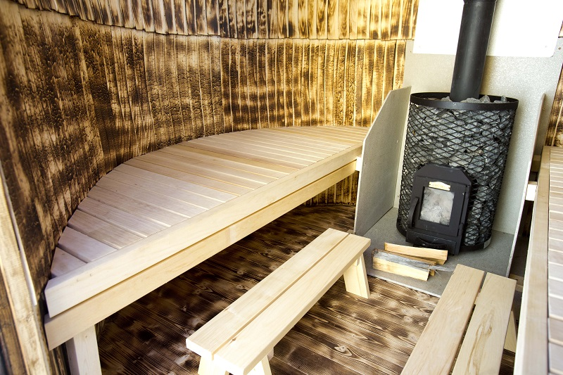
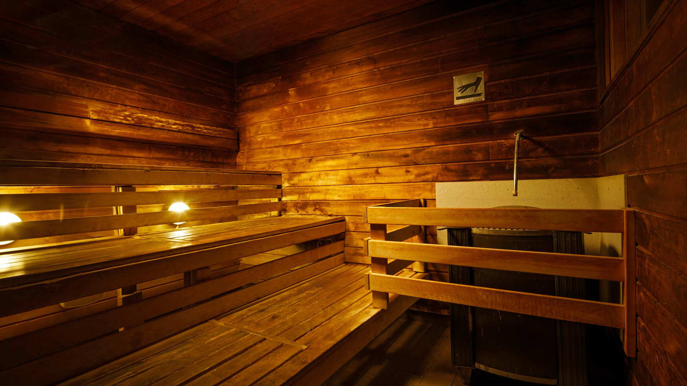
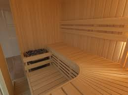
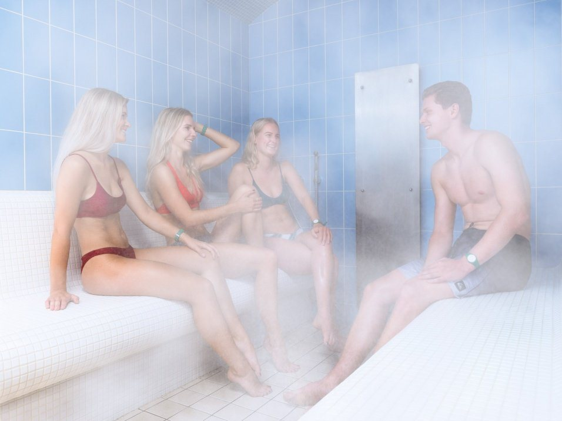
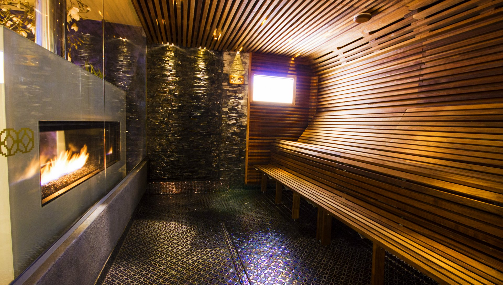
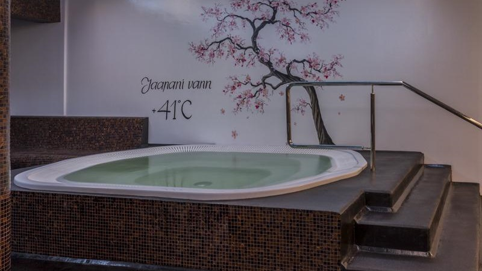
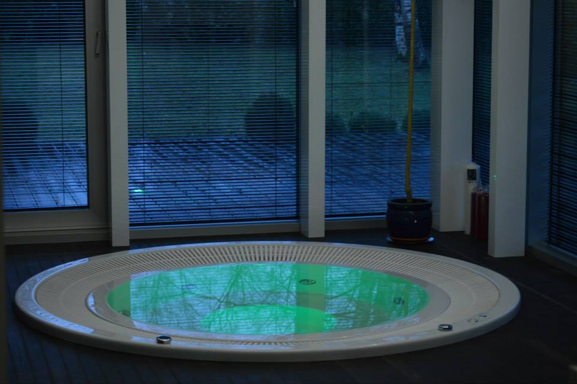

Saunakeskus

Luksuslikus saunakeskuses saavad meie külalised sukelduda veeparadiisi hellitavatesse mõnudesse. Lisaks auru- ja kolmele leilisaunale, saad siin nautida soolakivi-, puukütte- ja kadakasauna mõnusid. Meie saunameistrid hoolitsevad meeldiva atmosfääri eest regulaarsete saunarituaalide ajal, muutes saunaskäigu eksklusiivseks ja meeldejäävaks kogemuseks. Saunaskäimise vahele saad end jahutada mõnusates spaa-basseinides ja mullivannides ning nautida värskendavaid kokteile spaa baaris.
|  | Leilisaun 100°C on kasulik kehale. Vähendab väsimust ja noorendab. Saunaga tuleb ettevaatlik olla südame- ja vererõhuhaigustega inimestel. Saunakuumust peaksid vältima epilepsia, peaaju põletikku põdenud ja kaugele arenenud veresoonkonna-, südame- ja neerupuudulikkusega haiged. |
|  | Leilisaun 85°C on mõeldud nendele, kes ei kannata kõrget temperatuuri. Värskendab ja lõõgastub. Saunaga tuleb ettevaatlik olla südame- ja vererõhuhaigustega inimestel. Saunakuumust peaksid vältima epilepsia, peaaju põletikku põdenud ja kaugele arenenud veresoonkonna-, südame- ja neerupuudulikkusega haiged. |
|  | Aurusaun 60°C on väga kasulik. Aur puhastab nahka, parandab naha struktuuri, avab poorisid ja aitab higinäärmetel eritada kehast jääkaineid. Arstide sõnul on täpselt doseeritud saunaprotseduurid head neerudele. Alaneb vererõhk hüpertoonia ja stenokardia haigetel, vähenevad haigusnähud üleväsimuse puhul, soodustatud on haavade paranemine. Kuumutamist soovitatakse ka neile, kes põevad kroonilist polüartriiti, ishiasi, radikuliiti ja mõningaid ainevahetushaigusi. |
|  | Sanaarium 55°C on lõõgastumissaun. Rahustab ja värskendab. Arstid väidaavad, et saunaleil mõjub neljas suunas. Esiteks, tugevneb naha, välimiste lihaste ja hingamisteede tegevus; teiseks, tugevnenud higistamise puhul (saunaleilis kaob kehast umbes 200-1500g niiskust) väheneb kehakaal; kolmandaks, kutsub esile vegetatiivseid närvisüsteemi muutusi, mis tugevdavad protseduuri üldist efekti; neljandaks, avaldab psüühilist mõju. |
|  | Jaapani vann 40°C lõõgastuv kuuma veega vann. Puhastab, noorendab ja värskendab. Saunaga tuleb ettevaatlik olla südame- ja vererõhuhaigustega inimestel. Saunakuumust peaksid vältima epilepsia, peaaju põletikku põdenud ja kaugele arenenud veresoonkonna-, südame- ja neerupuudulikkusega haiged. |
|  | Mullivann 33°C lõõgastuv soe vann koos veemassaažiga vann. Kuidas saab lihtne veejuga nii palju kasu tuua? Seda, et meie igapäevane vanniskäik kujutab endast kõige elementaarsemat vesiravi vormi, võib lugeda tõestatud faktiks. Õhusegused veejoad, mille temperatuur on ligikaudu 37 °C, parandavad vereringet ja hapniku omistamise võimet ning tõstavad naha ja lihaste toonust. |
Ainult positiivsed mõjud ja muljed
Saunaskäimine eeldab, et keha kuumutatakse leiliruumis üles ja jahutatakse siis maha. Sellist tegevust tuleks korrata vaheldumisi kuni kolm korda. Võidu peale leilivõtmist peavad tohtrid oma keha ja tervise suhtes lugupidamatuks tegevuseks. Tervisehäirete vältimiseks soovitavad tohtrid piirduda 85-90°Cse kuumusega. Vaid saunaga karastunud inimesed võivad endale lubada enamat. Et õnnetusi ei juhtuks, tuleb saunas jälgida niiskuse ja temperatuuri omavahelist suhet. Mida kõrgem temperatuur, seda madalam peaks olema niiskuse protsent. Kõige raskem on taluda sauna, kus on nii niiskus kui kuumus väga kõrge. Kui inimene on terve ja harjunud end pärast leili külma veega karastama, võib ta end ka tiiki kasta. Pea ees saunalavalt vette tormata ei soovitata neile, kes pole end varem karastanud. Järsk temperatuurimuutus võib tekitada spasme. Saunast väljudes peaks inimesel olema aega puhkeruumis maha jahtusa, sest aeglane jahtumine kasulik, kuna vastasel korral tõmbuvad veresooned liig kiiresti kokku ning kaob veresooni lõõgastav efekt.